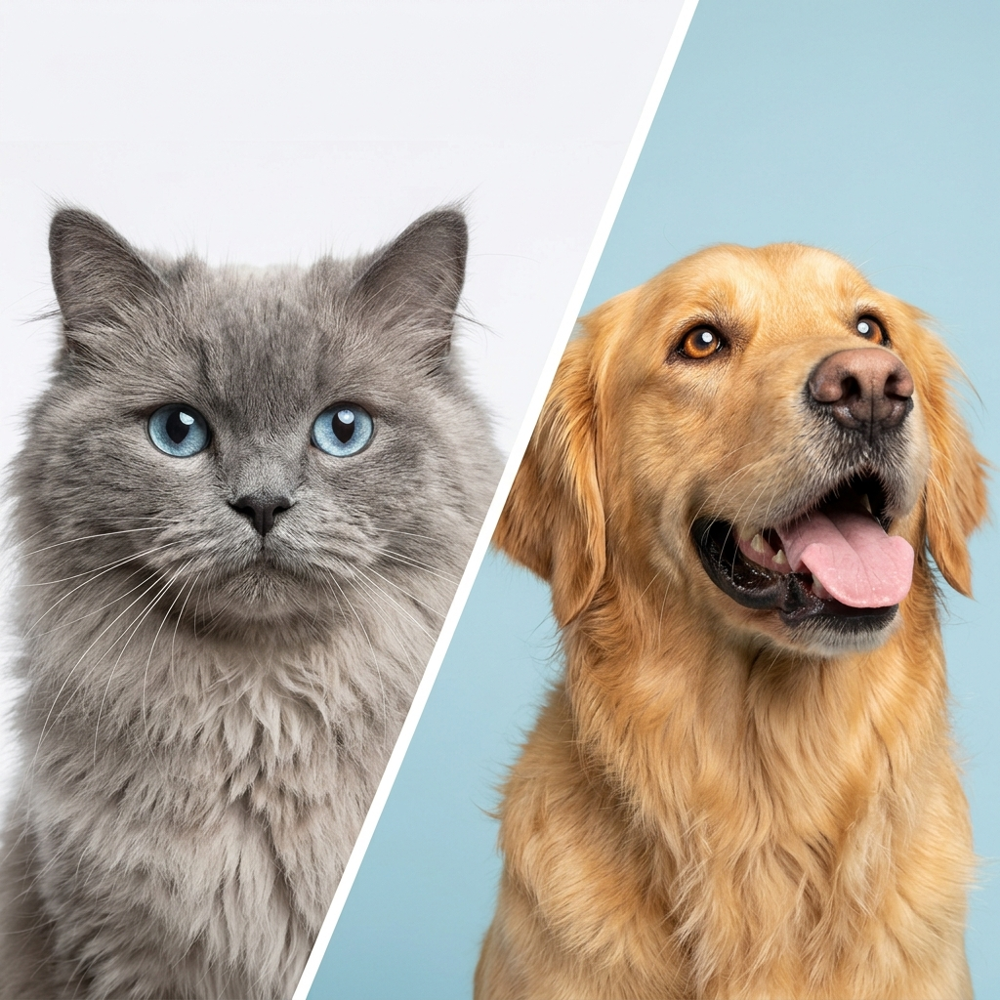
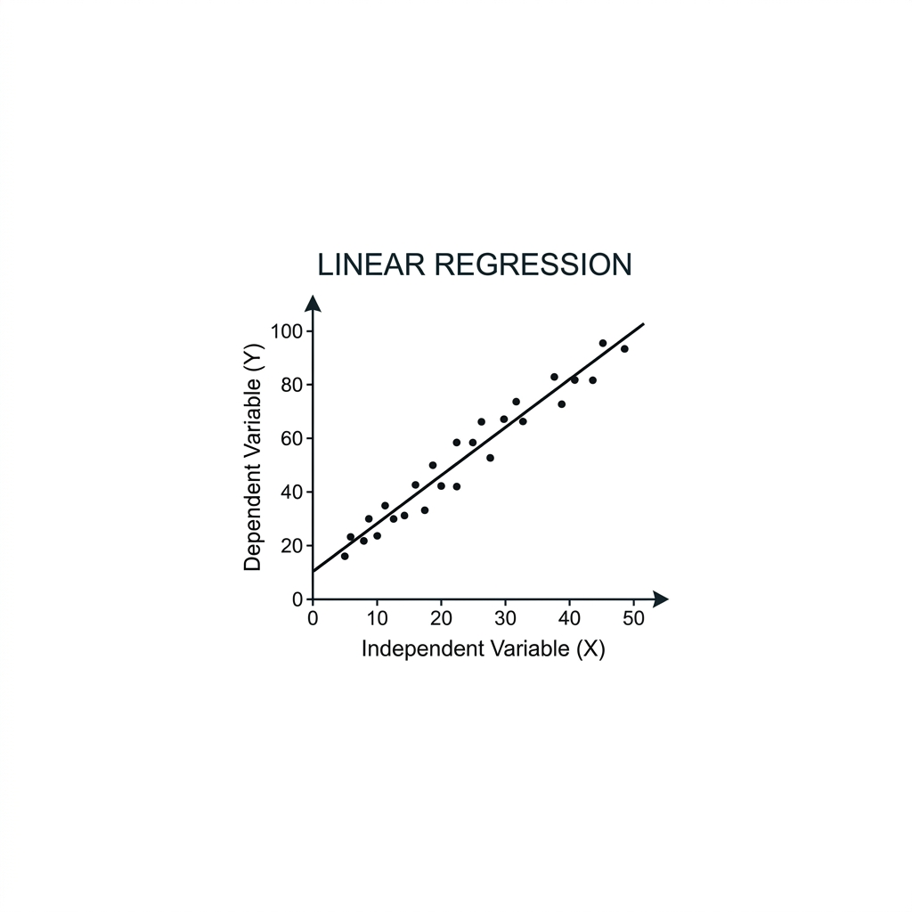

Abdelrahman
Computer Science Student
I study Computer Science at TU Dortmund and I am interested in data science and machine learning. I use Python and SQL and build personal projects with Pandas, Scikit-learn, TensorFlow, and PyTorch. I am looking for a working-student or internship opportunity where I can improve my skills and gain practical experience.
Education
Technische Universität Dortmund
2022 - 2027Bachelor of Science (B.Sc.) in Computer Science
Projects
View GitHubActive project
Currently Building
Project archive
Completed Projects
Sentiment Analysis System
A sentiment analysis project comparing VADER with a RoBERTa model on customer reviews.

Cats vs. Dogs Classifier
A CNN project built with TensorFlow and Keras to classify images of cats and dogs.
Housing Price Predictor
A regression project that compares several models and uses stacking to predict house prices.
Titanic Survival Prediction
A classification project using Scikit-learn to predict passenger survival from the Titanic dataset.
Iris Flower Classification
A classification project using flower measurements to predict iris species.

Linear Regression Model
A simple regression project predicting salary from years of experience.